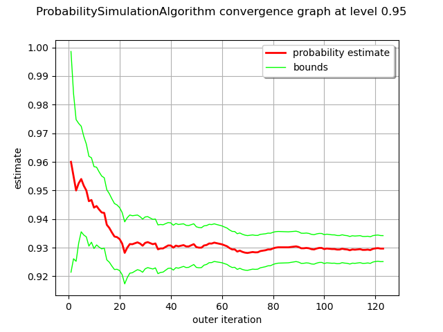

Note
Go to the end to download the full example code
Estimate a process-based event probability¶
The objective of this example is to evaluate the probability of an event based on a stochastic process, using the Monte Carlo estimator.
Let  be a stochastic process
of dimension
be a stochastic process
of dimension  , where
, where  is discretized on the mesh
is discretized on the mesh
 .
.
We define the event  as:
as:
![\begin{aligned}
\displaystyle \mathcal{E}(X) = \bigcup_{\underline{t}\in \mathcal{M}}\left\{X_{\underline{t}} \in \mathcal{A} \right\}
\end{aligned}]()
where  is a domain of
is a domain of  .
.
We estimate the probabilty  with the Monte Carlo
estimator.
with the Monte Carlo
estimator.
The Monte Carlo algorithm is manipulated the same way as in the case where the event is based on a random variable independent of time.
We illustrate the algorithm on the example of the bidimensionnal white
noise process  where
where
 , distributed according to the bidimensionnal standard
normal distribution (with zero mean, unit variance and independent
marginals).
, distributed according to the bidimensionnal standard
normal distribution (with zero mean, unit variance and independent
marginals).
We consider the domain ![\mathcal{A} = [1,2] \times [1,2]]() . Then the event writes:
. Then the event writes:
![\begin{aligned}
\displaystyle \mathcal{E}(\varepsilon) = \bigcup_{\underline{t}\in \mathcal{M}}\left\{\varepsilon_{t} \in \mathcal{A} \right\}
\end{aligned}]()
For all time stamps  , the probability
, the probability  that the process
enters into the domain at time
that the process
enters into the domain at time  writes, using the independence
property of the marginals:
writes, using the independence
property of the marginals:
![\begin{aligned}
p_1 = \mathbb{P}\left(\varepsilon_t \in \mathcal{A}\right) = (\Phi(2) - \Phi(1))^2
\end{aligned}]()
with  the cumulative distribution function of the scalar standard Normal distribution.
the cumulative distribution function of the scalar standard Normal distribution.
As the process is discretized on a time grid of size  and using the
independence property of the white noise between two different time
stamps and the fact that the white noise follows the same distribution
at each time , the final probability
and using the
independence property of the white noise between two different time
stamps and the fact that the white noise follows the same distribution
at each time , the final probability  writes:
writes:
![p = \mathbb{P}\left(\mathcal{E}(\varepsilon)\right) = 1 - (1 - p_1)^{N}]()
With  realizations, using the Monte Carlo estimator, we obtain
realizations, using the Monte Carlo estimator, we obtain  ,
to be compared to the exact value
,
to be compared to the exact value  for a time grid of size
for a time grid of size  .
.
import openturns as ot
import openturns.viewer as viewer
from matplotlib import pylab as plt
ot.Log.Show(ot.Log.NONE)
Create a time grid
tMin = 0.0
timeStep = 0.1
n = 100
tgrid = ot.RegularGrid(tMin, timeStep, n)
Create a normal process
amplitude = [5.0]
scale = [3.0]
model = ot.ExponentialModel(scale, amplitude)
process = ot.GaussianProcess(model, tgrid)
Create the 1-d domain A: [2.,5.]
lowerBound = [2.0]
upperBound = [5.0]
domain = ot.Interval(lowerBound, upperBound)
Create an event from a Process and a Domain
event = ot.ProcessEvent(process, domain)
Create the Monte-Carlo algorithm
montecarlo = ot.ProbabilitySimulationAlgorithm(event)
# Define the maximum number of simulations
montecarlo.setMaximumOuterSampling(1000)
# Define the block size
montecarlo.setBlockSize(100)
# Define the maximum coefficient of variation
montecarlo.setMaximumCoefficientOfVariation(0.0025)
# Run the algorithm
montecarlo.run()
# Get the result
montecarlo.getResult()
graph = montecarlo.drawProbabilityConvergence(0.95)
view = viewer.View(graph)
plt.show()
